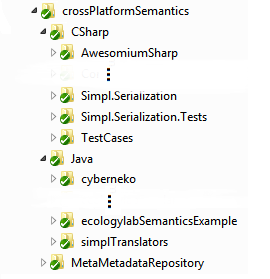
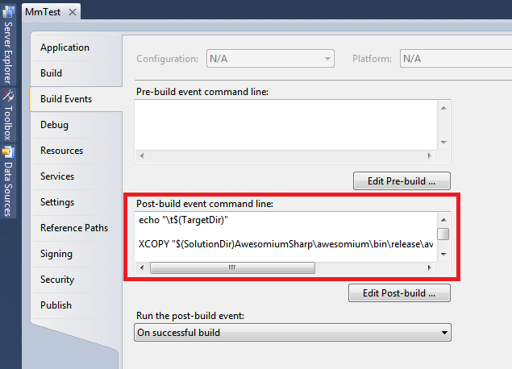

This page explains how to set up a cross-platform development environment for meta-metadata. Currently, meta-metadata supports development in Java and .NET (C#), among several other targeting languages. For any questions or feedback, feel free to contact the community.
To setup your environment, first of all you need to check out the environment which contains the meta-metadata wrapper repository and related projects. If you plan to primarily develop in Java, refer to the Java section to setup your Eclipse workspace. If you plan to primarily develop in .NET (C#), refer to the .NET (C#) section to setup your Visual Studio solution.
Checking out the environment
You will need a Subversion (SVN) client to check out the environment. For Windows, we recommend TortoiseSVN. The following tutorial will assume you have TortoiseSVN installed. For other operating systems or SVN clients, the process will be similar.
1. Choose an empty folder, e.g. crossPlatformSemantics in your user profile (we will assume that you have chosen a folder with this name in the following tutorial), as the root folder for the environment.
2. Right click the folder, and select SVN Checkout.
3. Use the following SVN repository URL to check out the environment: https://svn.ecologylab.net/crossPlatformSemantics/trunk use user name and password anonymous if prompted.
4. In the folder, you should see subfolders including MetaMetadataRepository, Java, and CSharp, as shown below.

Java
Meta-metadata works with Java SE 1.6 development environment (JDK 1.6). If you do not have it in your machine, you should follow the link, download and install it.
In the lab we prefer to use Eclipse and some parts of the tutorials will be Eclipse specific.
You will also want Subclipse Plugin 1.6+ for easily accessing SVN from inside Eclipse. We recommend to use it.
1. Start Eclipse, and choose crossPlatformSemantics/Java as the workspace folder.
2. Select File -> Import, and then select Existing Projects into Workspace from General in the tree view. Then click Next.
3. In the dialog, choose Select root directory, and use Browse to select the crossPlatformSemantics folder. Several projects should then be listed below. Select all of them; if you are not doing Android development, deselect those ended with "Android" (e.g. ecologylabFundamentalAndroid and ecologylabSemanticsSun). Then click Finish.
Now your Eclipse workspace should compile (no red 'x' or exclamatory mark in Package Explorer).
Also, if you have Subclispe installed, it should be able to recognize the projects:
- Open SVN Repository Exploring perspective (see illustration below to open the perspective), you
should be able to see the SVN repository URL listed.
- You can use the Team Synchronizing perspective to update projects through SVN within Eclipse.

4. Locate the NewMmTest.launch file in project ecologylabSemanticsExample, right click on it and run it as Java application. You should be able the see extracted semantics from the console output, in the form of serialized XML.
Eclipse allows you to configure the launch file in a dialog box. In the Program Arguments pane, you can try other URLs to invoke and test existing wrappers, such as:
- http://www.google.com/search?q=interface+ecology+lab
- http://remodelista.com/products/victoria-and-albert-wessex-bath
- http://www.informaworld.com/smpp/content~db=all?content=10.1080/10447310802142243
Keep the VM arguments (arguments to the Java Virtual Machine) as: -Xms320m -Xmx320m -Xincgc -XX:NewSize=128M -XX:MaxNewSize=128M Try it out. For code samples, see the tutorial.
.NET (C#)
1. You will need Visual Studio 2010 + Service Package 1. Visual Studio 2010 can be obtained through MSDN Academic Alliance or Dreamspark if you are qualified. Service Package 1 can be downloaded here.
2. For accessing SVN from inside Visual Studio, you can install AnkhSVN. In Visual Studio menu, choose Tools -> Extension Manager, choose Online Gallery from the left column, and search for SVN. You will find it in the search result. Alternatively, you can use TortoiseSVN with Windows Explorer.
3. If you use AnkhSVN, make sure to select it as the source control plug-in from Tools -> Options -> Source Control in the left column.
4. Install Visual Studio Async CTP (SP1 Refresh). This extension enables language support for making asynchronous calls, and will be part of Visual Studio 2012.
5. Install Microsoft Surface 2.0 SDK and Runtime (you may need to install Microsoft XNA Framework Redistributable 4.0 which is required by Surface 2.0 SDK).
6. Install Microsoft Expression Blend SDK for .NET 4.
7. Click the solution file (.sln) in crossPlatformSemantics/CSharp to launch the workspace with Visual Studio. You should be able to see a list of projects in the solution.
8. Build the solutions. If there is compilation error about Async CTP (SP1 Refresh), such as failing
to recognize async as a keyword, follow
this link to correct your Async CTP installation. Note that Windows Phone
Dev Tools and VB for phone developers are optional depending on your needs for
development.
Make sure that your csc.exe,
vbc.exe,
msvbide.dll,
AsyncCtpLibrary_Phone.dll are at least not older than
listed in that article, if you do have the file.
If you still have problems, uninstall all Visual Studio related hotfixes and updates (Control Panel
-> Uninstall a program -> View installed updates), and reinstall Async CTP (SP1 Refresh).
9. Create your own application! Note to refer to relevant projects when needed (Visual Studio does not add references for you automatically, even the referred project is in the same solution).
Special Tips on Debugging: Visual Studio by default does not break when Common Language Runtime exceptions (such as NullPointerException or IndexOutOfRangeException). To make Visual Studio break correctly at the line in your code where such an error occurs, go to the Debug > Exceptions. Ensure that the Common Language Runtime Exceptions is checked under the Thrown column.
10. Add a reference to AsyncCtpLibrary.dll in your application. You will also need Awesomium related DLLs in project AwesomiumSharp; you can automate copying these dependencies using Post-Build Event: Right click on project MmTest, select Properties -> Build Events, and copy the script into the same place in your project (see illustration below).
